Ohio · since 1833
New Bremen
A history in photographs
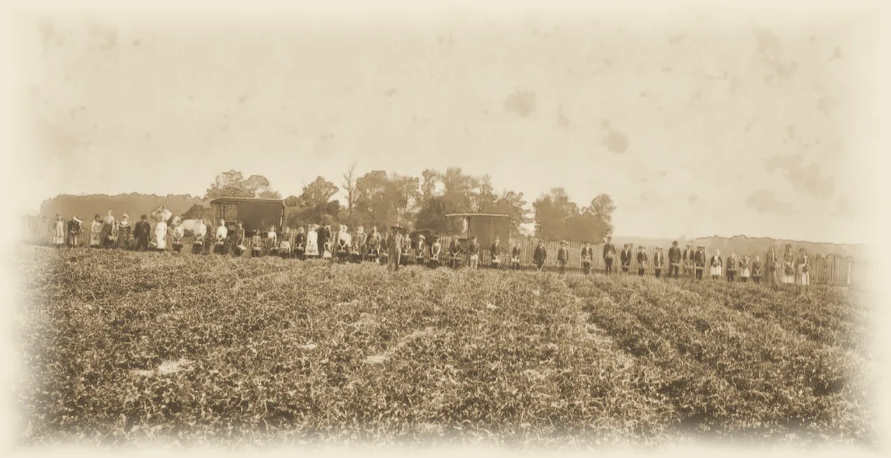
Before 1832
The Divide
About twelve thousand years ago, a retreating glacier left a low ridge across this flat country. Rain that falls on its north side runs to Lake Erie. Rain on its south side runs to the Ohio River.
The land sat at the edge of the Great Black Swamp. The Auglaize Trail, a Native trading path and portage between the Miami and St. Marys rivers, crossed it.
Photo: Strawberry fields at the Walnut Hill Fruit Farm, 1909. The land is still this flat. New Bremen Historic Association
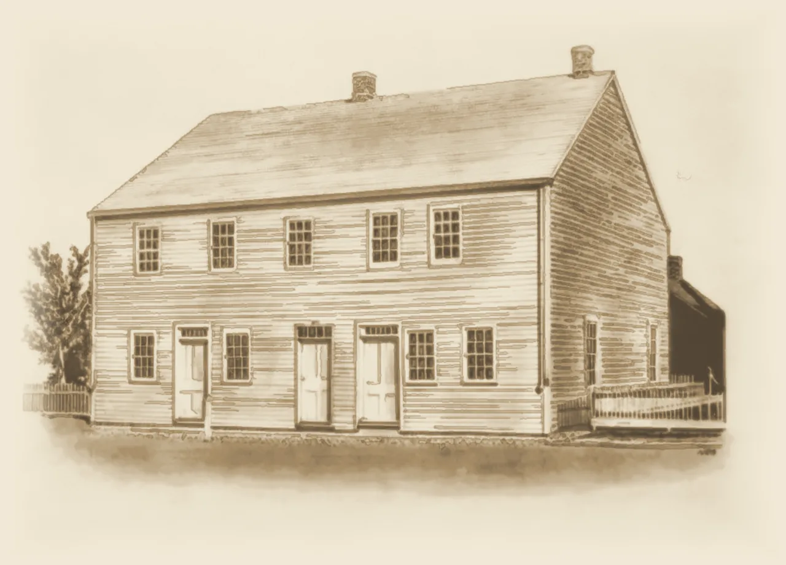
1832–1833
Bremen in the Clearing
In 1832, thirty-three German immigrants formed a company in Cincinnati to start a town of their own. Their scouts, F. H. Schroeder and A. F. Windeler, searched much of Ohio before choosing a partly cleared rise at the edge of the swamp.
Windeler led six families on a two-week, 120-mile trek north. At first they all lived in Schroeder’s twelve-by-fourteen-foot log hut. On June 11, 1833, the plat of Bremen was recorded: 102 lots, one for each member and the rest for sale at $25.
When the post office came in 1835, the town took a new name: New Bremen.
Photo: The Luelleman House, begun in 1837. New Bremen Historic Association
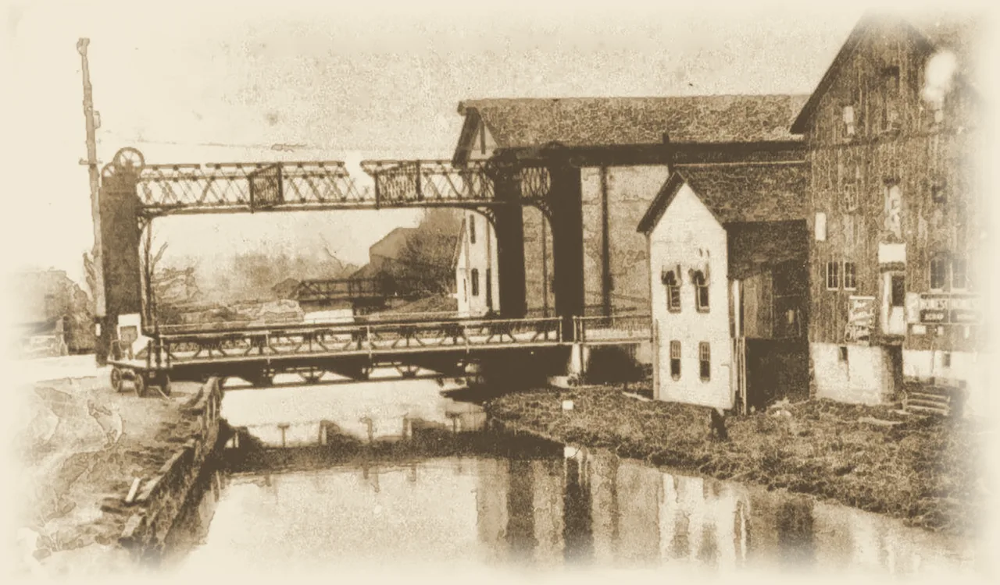
1845
The Canal Comes Through
The Miami and Erie Canal reached New Bremen in 1845. It ran about 250 miles, from Cincinnati to Toledo, and a trip that had taken weeks over land now took days.
Boats seventy to eighty feet long were pulled by three mules walking in a line on the towpath. They rose and fell through locks ninety feet long and fifteen feet wide, and Lock One was right in town.
Photo: The canal at Lock One, looking north, after 1904. New Bremen Historic Association
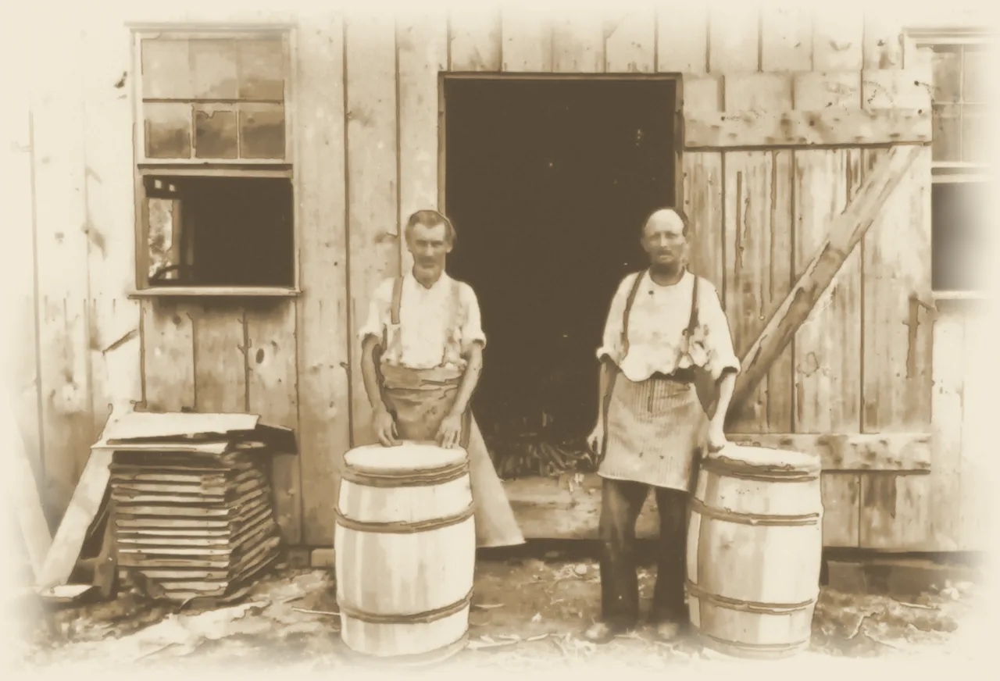
1850
A Canal Boomtown
By 1850 New Bremen had five hotels, ten saloons and six dance halls. Ten cooperages made barrels and six blacksmiths kept the wagons and boats running.
Much of it ran on pork. At the trade’s peak, more than ten thousand hogs went out of town by canal boat. Charles Boesel, who opened the first store, was one of the leaders of the grain and pork business.
Photo: August Schneider and Henry Wiegman at their barrel shop, 1898. New Bremen Historic Association
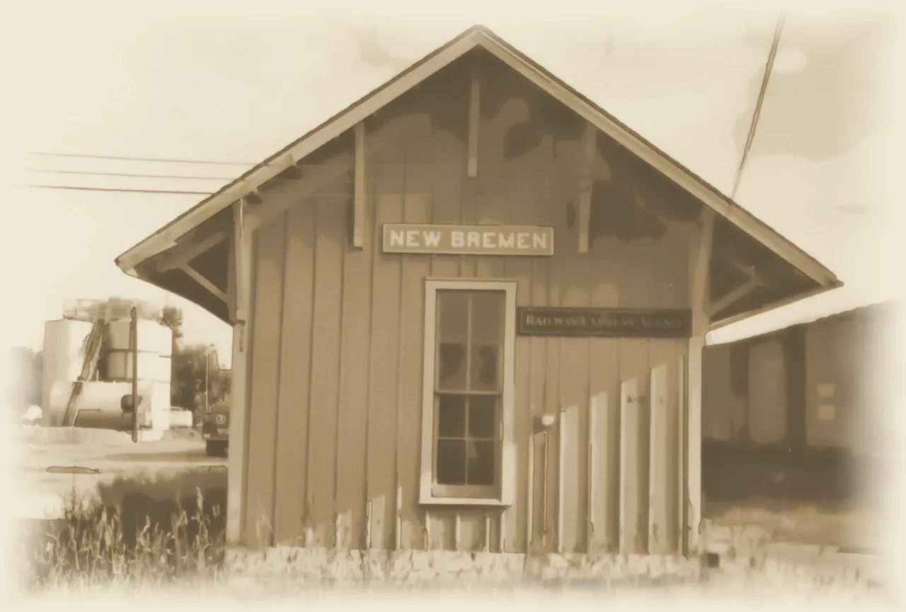
1871
Iron Rails
Railroads began pulling trade away from the canal in the late 1850s. The canal even carried the iron for the rails that would replace it.
In 1871 a rail line came through New Bremen. The towpath grew quieter, and the town turned toward the tracks.
Photo: The New Bremen railroad depot, photographed in 1962. New Bremen Historic Association
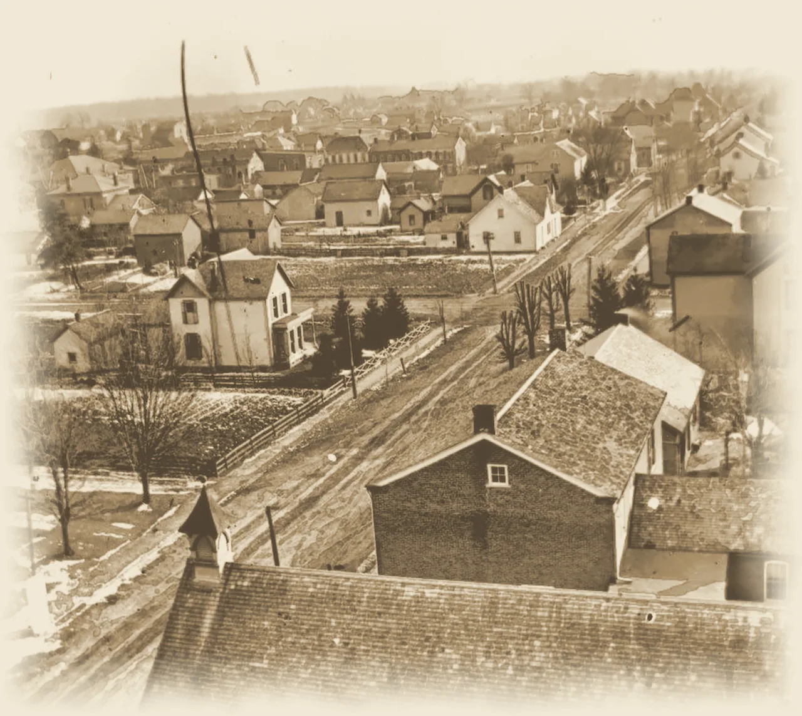
1875–1876
Frogtown and Cheesequarters
The canal ran between two towns. Bremen lay to the west, and Ober Bremen, platted in 1853, grew up to the east. Neighbors called the east side Frogtown and the west side Cheesequarters.
On October 12, 1875, voters chose 101 to 16 to join them, and in 1876 the two became one New Bremen.
Photo: Looking south from St. Paul Church, about 1900. New Bremen Historic Association
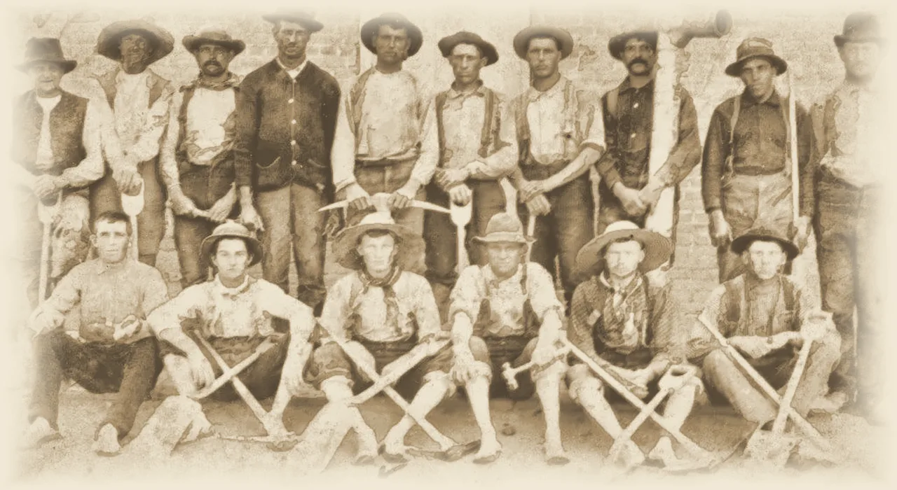
1888–1896
Gaslight and an Opera House
On July 3, 1888, a crowd gathered to watch natural gas lit in New Bremen for the first time. Electric light, telephone lines and a town water works followed by 1902.
The Boesel Opera House, built for $6,925, opened on January 3, 1896, and gave the town a stage of its own.
Photo: A play on the opera house stage, early 1900s. New Bremen Historic Association
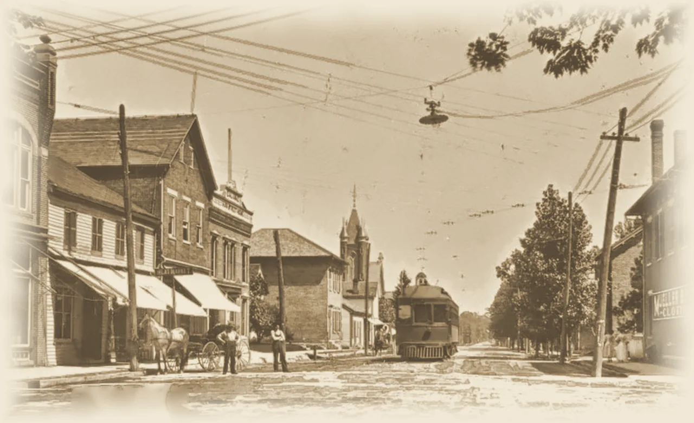
1902–1931
The Interurban
On April 21, 1902, the first electric car of the Western Ohio Railway rolled into town. The interurban ran right down Main Street and tied New Bremen to its neighbors.
For almost thirty years it carried people from town to town, until cars and paved roads took over. The line was abandoned in 1931.
Photo: Looking north on Main Street from Monroe Street as a Western Ohio Railway car approaches, early 1900s. New Bremen Historic Association
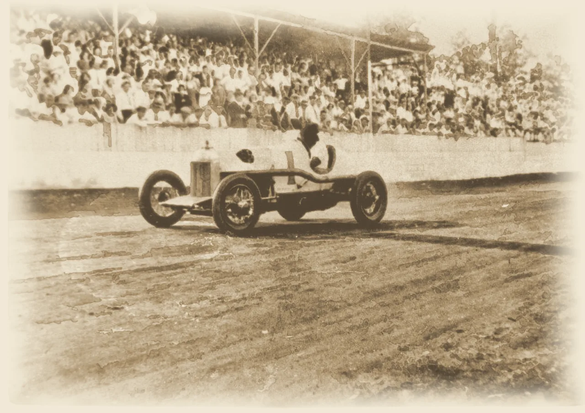
1930s–1970s
The Speedway
By the early 1930s, crowds packed the covered grandstand at the New Bremen Speedway to watch open-wheel race cars slide through the turns of a dirt oval set among the farm fields.
Later paved as a half-mile asphalt oval, it drew sprint car races sanctioned by the United States Auto Club. On August 27, 1967, Larry Dickson set the track record: 18.42 seconds a lap, almost 98 miles an hour. Racing there ended in the 1970s.
Photo: A race car takes a turn in front of the grandstand at the New Bremen Speedway, early years. New Bremen Historic Association
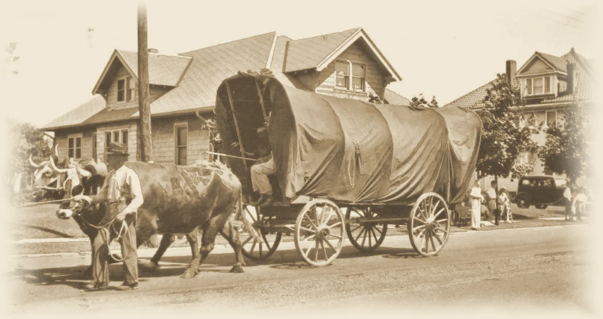
1933
The Centennial
From July 1 to 4, 1933, in the middle of the Depression, New Bremen threw itself a hundredth birthday.
The town also published a centennial book. Its histories, by C. A. Schrage and W. W. Grothaus, are still a main source for the early years, including much of this story.
Photo: An ox-drawn covered wagon in the 1933 Centennial Parade. New Bremen Historic Association
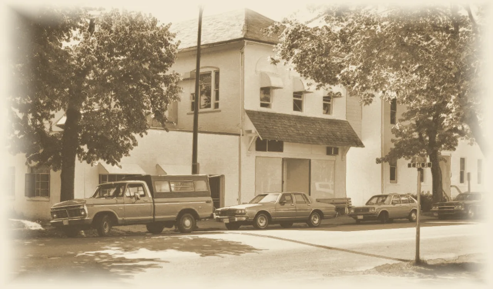
1945
Crown
In 1945 the Dicke family started Crown Controls in New Bremen, growing out of a business that made temperature controls for coal furnaces. In 1949, as television arrived, Crown began making antenna rotators, motors that turned a rooftop antenna toward the station.
In the late 1950s it built its first lift trucks. Crown Equipment grew into one of the largest lift truck makers in the world, with more than 20,000 employees. It is still privately held, still led by the Dicke family, and its world headquarters is still in New Bremen.
Photo: Crown’s former antenna rotator plant, once Rabe Hardware, in the 1970s. New Bremen Historic Association
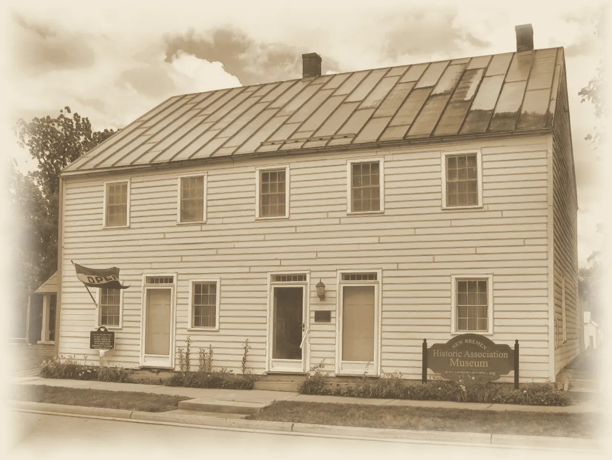
1968–1976
Saving the Story
In 1968 the old Thompson House at Lock One, which had once put up canal boatmen, came down along with its livery stable to make room for a park.
On the evening of September 27, 1973, neighbors gathered in a backyard and talked about that loss. Within a week they had formed the New Bremen Historic Association, and they set out to buy the Luelleman House, one of the first frame houses in town, as a museum.
Pledges from businesses and townspeople paid for it, and on July 4, 1976, the nation’s 200th birthday, the town dedicated the museum. Every photograph on this page comes from the association’s collection.
Photo: The Luelleman House, now the association’s museum, in 2024. New Bremen Historic Association
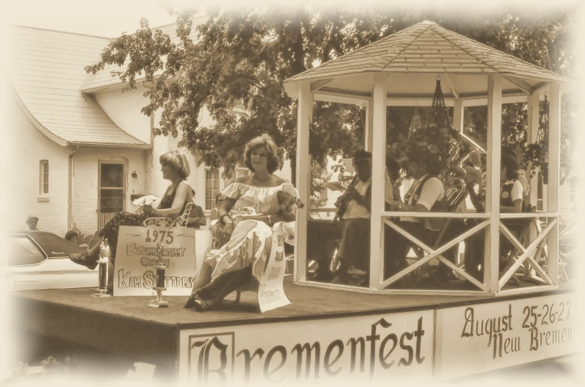
Since the mid-1970s
Bremenfest
Since the mid-1970s, Bremenfest has filled New Bremen’s streets every August with a parade, food tents, live bands and a Bremenfest queen.
Today it runs four days, with a car show, a 5K run, bed races and duck races on the canal.
Photo: A band plays in the gazebo of a Bremenfest float carrying the 1975 Bremenfest queen. New Bremen Historic Association
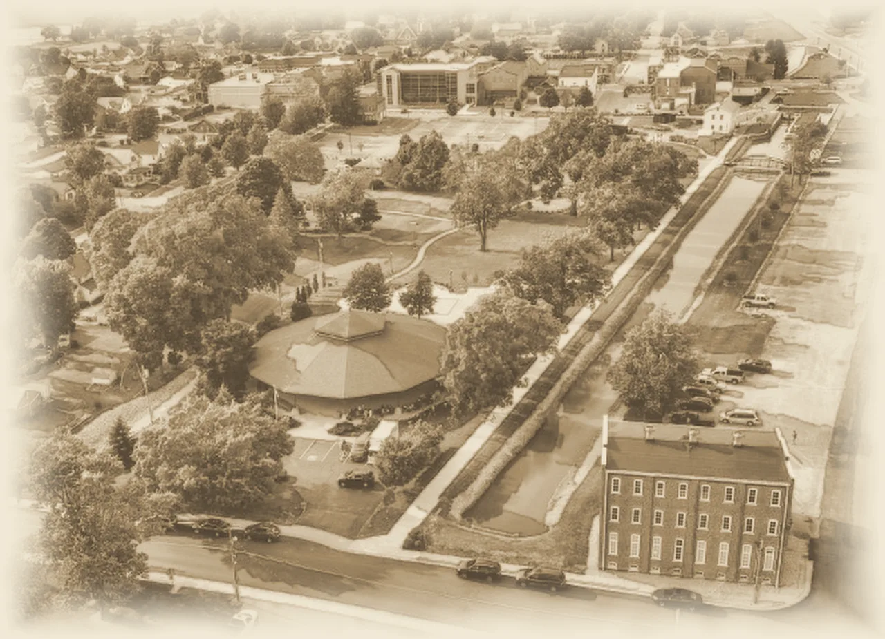
Today
The Story Continues
Boats no longer use the canal, but Lock One was restored in 2006, and a towpath trail follows the old water through town. Beside it stands the Crown Pavilion, built around 1900 on an island in Indian Lake and moved here by the Dicke family in the early 2000s.
About three thousand people live here, home to Crown’s world headquarters and the Bicycle Museum of America. The Historic Association keeps collecting the town’s story; its museum is on North Main Street.
Photo: The canal through the middle of town, with the Crown Pavilion beside it, 2019. New Bremen Historic Association